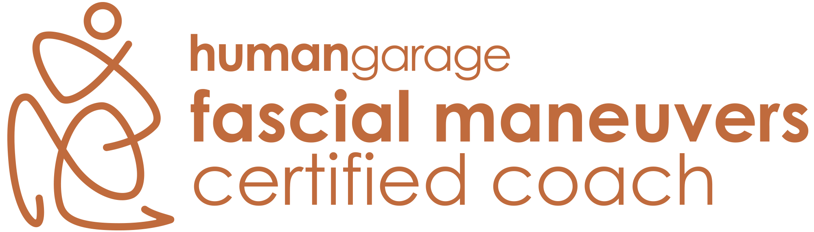

Du hast viel probiert, aber die Anspannung und die innere Unruhe bleiben? In ruhiger 1:1-Arbeit und im Gruppenkurs begleite ich dich zurück in einen Körper, der nicht mehr funktionieren muss, sondern endlich sein darf.
Was dich hier erwartet
Finde das passende Format für dich.
Individuelle 1:1-Begleitung – für Menschen mit langer Leidensgeschichte.
Einzelarbeit ansehen
Maximilian ist einer der ersten von Human Garage in Deutschland ausgebildeten und zertifizierten Faszienmanöver-Coaches, ausgebildet in Neural Reset Therapy® nach Lawrence Woods.
„Danach war es wirklich in meinem Kopf sehr still, was sich erst schleichend wieder nach ein paar Tagen änderte. Immer wieder gern.“
Natascha · via Fyndery